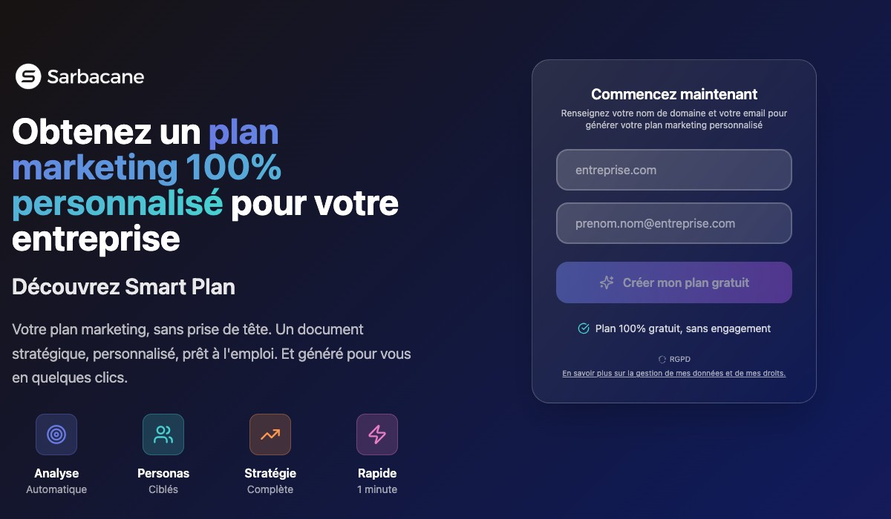
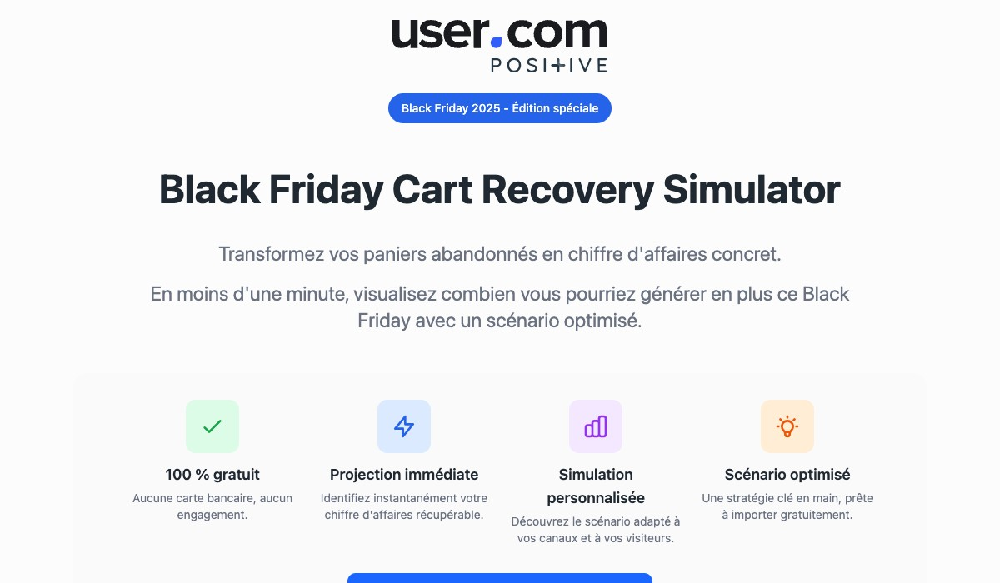
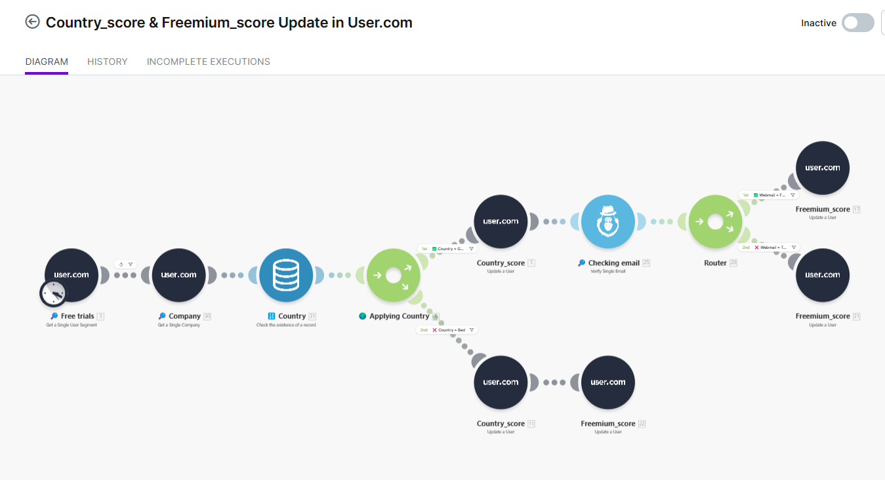
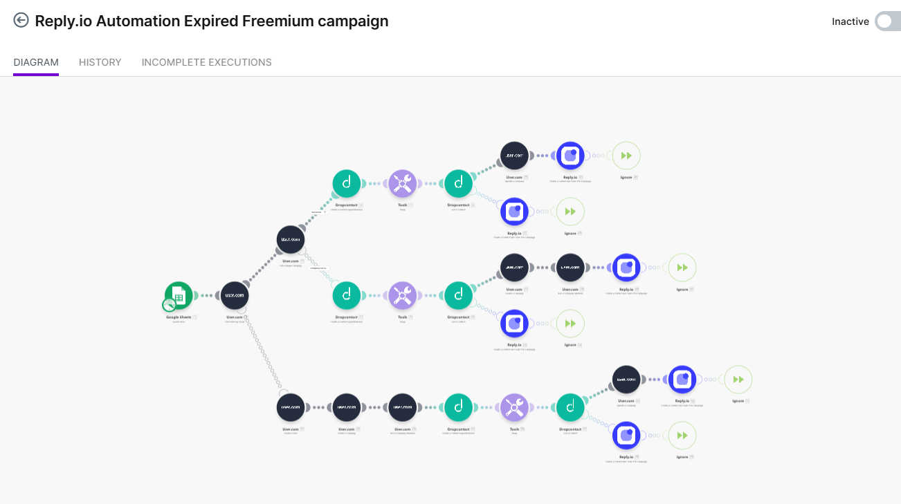
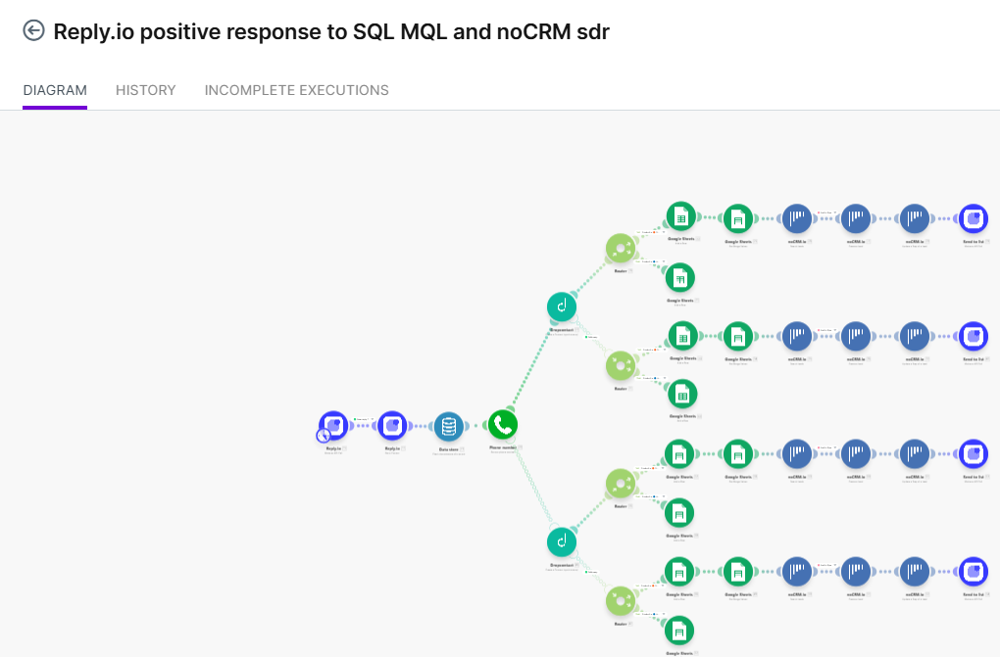
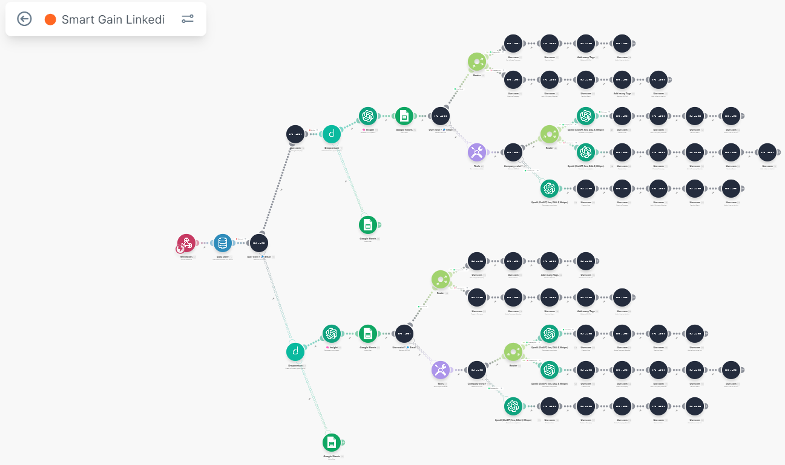

Au cours des huit dernières années, j'ai accompagné le lancement de nouveaux produits SaaS, la structuration d'une plateforme multi-produits et le déploiement de stratégies Go-to-Market sur le marché français. Mon objectif est toujours le même : transformer une innovation en produit adopté, puis en moteur de croissance.
Mon rôle ne consistait pas uniquement à créer des campagnes marketing. Il consistait à faire le lien entre le Produit, le Marketing, les équipes commerciales et les opérations afin que chaque lancement devienne un véritable moteur de croissance.
C'est cette approche, à la croisée du Product Marketing, du Go-to-Market, du Growth et du Revenue Operations, que je souhaite aujourd'hui mettre au service des équipes New Business de Decathlon.
Voir les études de casCe qui m'attire n'est pas uniquement le Product Marketing. C'est l'opportunité d'accompagner le lancement et la croissance de nouvelles activités en travaillant à l'interface du Produit, du Marketing et du Business.
Construire un Go-to-Market efficace ne consiste pas simplement à lancer un produit. Il s'agit de comprendre un marché, de définir le bon positionnement, d'accompagner les équipes, de créer les bons supports et de mettre en place les mécanismes qui permettront une adoption durable. Ce sont précisément les problématiques que j'ai rencontrées à plusieurs reprises au cours de mon parcours.
J'apprécie particulièrement cette approche parce qu'elle combine vision stratégique et exécution opérationnelle : deux dimensions qui ont toujours guidé ma façon de travailler.
J'aborde chaque lancement comme un système dans lequel chaque équipe joue un rôle essentiel.
C'est cette vision transversale qui caractérise mon parcours. Je ne cherche pas uniquement à produire des assets marketing : je cherche à construire les conditions permettant aux équipes de travailler ensemble, d'accélérer l'adoption d'un produit et de générer un impact mesurable sur le chiffre d'affaires.
Sarbacane Chat est né d'un partenariat entre Positive Group et une startup incubée à Euratechnologies. L'objectif était d'introduire auprès de notre base clients une nouvelle catégorie de produit : le marketing conversationnel.
À cette époque, bien avant l'arrivée massive des LLM, le sujet restait très technique et le marché encore peu mature. Le premier défi n'était donc pas commercial. Il était pédagogique.
J'ai piloté le Go-to-Market de cette nouvelle solution en assurant la coordination entre les équipes Produit, Marketing, Sales et Customer Success. Pendant cette période, le produit a été piloté comme une véritable Business Unit interne, avant son intégration complète aux équipes existantes.
Cette première expérience m'a permis de travailler au plus près du Produit, du Marketing et des équipes commerciales. Elle m'a ensuite ouvert la voie vers des enjeux plus larges de structuration de l'offre.

Dans la continuité directe de cette philosophie produit, j'ai depuis conçu ce planificateur pour Sarbacane : à partir du domaine et des objectifs, il génère automatiquement un calendrier marketing annuel. Encore en ligne aujourd'hui.
Voir l'outil en productionAprès avoir accompagné le lancement de Sarbacane Chat, j'ai rejoint les équipes Marketing Groupe afin de contribuer au lancement de Sarbacane Suite.
L'enjeu n'était plus de promouvoir une solution unique. Il s'agissait de construire une plateforme cohérente réunissant plusieurs produits complémentaires, et de rendre cette nouvelle offre lisible pour les entreprises comme pour les équipes internes.
Sarbacane Suite regroupait notamment Sarbacane, Sarbacane Chat, Sarbacane Engage, Sarbacane Forms, Sarbacane Pages et Sarbacane Sendkit.
Après avoir travaillé sur le lancement d'un produit puis sur la structuration d'une plateforme, j'ai accompagné le lancement de User.com sur le marché français avec un objectif clair : accélérer son adoption auprès des entreprises et construire un dispositif Go-to-Market reproductible.
Suite au rachat de User.com par Positive Group, la Direction souhaitait développer cette plateforme de Marketing Automation, CRM et personnalisation on-site sur le marché français.
Le contexte était cette fois totalement différent : un marché plus mature, des cibles principalement Grands Comptes, et l'objectif de construire un moteur d'acquisition capable d'alimenter durablement les équipes commerciales.
En collaboration avec les équipes Produit et Sales, j'ai participé à la définition puis à l'exécution de la stratégie Go-to-Market. J'étais également le référent Produit auprès des équipes Marketing, Sales et Customer Success, afin d'assurer une cohérence entre le discours, les usages et les besoins du marché français.

Simulateur créé pour User.com : aide les équipes marketing à projeter le ROI de leurs campagnes Black Friday et génère des recommandations automation personnalisées.
Voir l'outil en productionLe résultat dont je suis le plus fier n'est pas d'avoir participé à ces trois expériences prises séparément. C'est d'avoir construit des méthodes réutilisables, progressivement adoptées par d'autres Business Units du groupe.
Aujourd'hui, ces méthodes tournent à l'échelle de trois marchés SaaS simultanés :
Au-delà des outils, cette démarche a permis d'industrialiser certaines pratiques marketing et commerciales afin qu'elles puissent être répliquées à plus grande échelle. Quatre de ces routines, telles qu'elles tournent en production :

Scoring automatisé basé sur le pays et le comportement freemium, mis à jour en temps réel dans le CRM pour prioriser les leads à fort potentiel.

Déclenchement automatique de séquences pour les freemiums expirés, avec personnalisation des messages selon le profil et l'historique d'usage.

Routing automatique vers les sales selon les retours de campagne : les réponses positives passent en SQL/MQL et sont poussées dans le CRM pour traitement immédiat.

Pipeline complet depuis LinkedIn Ads : capture du formulaire, enrichissement data, recherche d'informations société, puis injection dans le CRM avec scoring.
Chaque lancement m'a rappelé une évidence : un Go-to-Market ne se copie jamais. Même lorsque le produit reste identique, les attentes des utilisateurs, la maturité du marché, les habitudes commerciales, les messages et les canaux d'acquisition évoluent selon les territoires.
Lancer une offre consiste donc moins à appliquer une recette qu'à construire un cadre méthodologique capable de s'adapter au contexte local. Je n'ai jusqu'à présent travaillé que sur le marché francophone, mais cette expérience m'a appris qu'un lancement réussi repose autant sur la compréhension des réalités locales que sur la qualité du produit lui-même.
Je ne considère pas qu'un lancement se mesure au nombre de campagnes réalisées. Je considère qu'il est réussi lorsque :
Les équipes comprennent le produit
Les commerciaux savent le vendre
Les clients en perçoivent rapidement la valeur
Les processus facilitent son développement
Les données permettent d'améliorer continuellement les actions
Les actions marketing ont un impact mesurable sur le chiffre d'affaires
C'est cette combinaison entre Product Marketing, Growth et Revenue Operations qui constitue aujourd'hui mon principal savoir-faire.
En quelques années, la nature de mes responsabilités a évolué : du lancement d'un produit à l'industrialisation d'une méthode.
Je ne connais pas encore votre organisation, vos équipes ni vos priorités, et je ne souhaite pas prétendre le contraire. En revanche, je reconnais les défis auxquels sont confrontés tous les nouveaux produits :
Ce sont des sujets que j'ai eu à résoudre, sous une forme différente, à chaque nouveau lancement. Aujourd'hui, j'ai envie de mettre cette expérience au service des équipes New Business de Decathlon.
Je serais ravi d'échanger sur les enjeux New Business de Decathlon et sur la façon dont mon parcours peut y contribuer.
Échanger avec moi